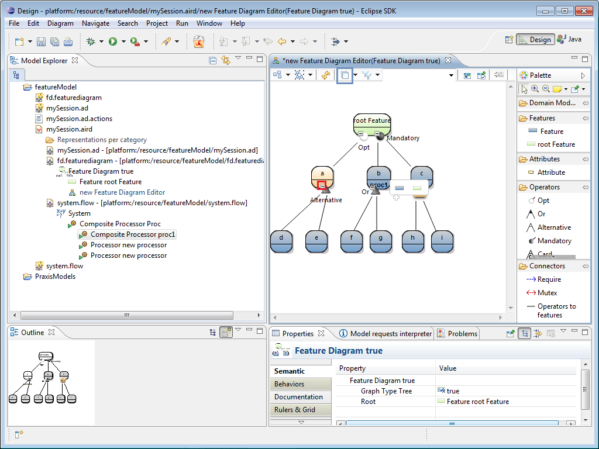

You can filter elements you want to display or not in the Outline view. You can hide two elements : attributes and all domain model elements (Model Elements) . To do this, click on the icon outlined in blue, and select elements that you do not want to appear. You can also fold and operator by clicking on the - outlined in red in the following figure.

So, features d and e are hidden and a + is displayed near theAlternative operator to present that it can be unfolded as in the following picture.
So, we have presented how to add Domain Model Element to the features.
The next section shows how to another view on the feature diagram.